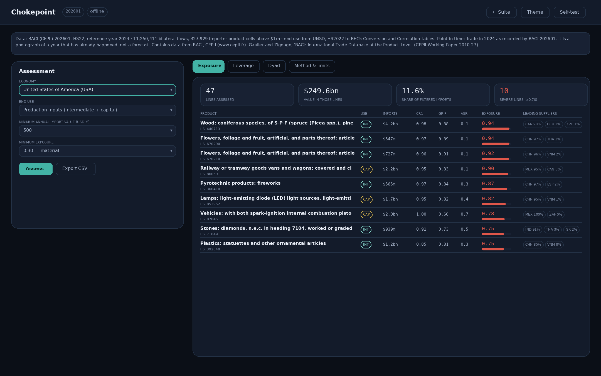

Ground Truth — three instruments that check a claim against the register, offline
Where is an economy’s supply concentrated and could anyone replace it; does a cited authority exist and is it what the citation says; who consolidates whom. Three questions, four open registers, and no network call at any point.

The problem
Three professions have the same defect in common. A compliance officer is asked whether a counterparty is exposed to a supplier who could switch the tap off, and answers from a supply-chain deck written by the counterparty. A litigator is handed a skeleton argument citing eleven authorities and reads none of them. A credit committee sees a corporate group chart drawn by the group. In each case the answer is available in a public register, and in each case nobody checks, because checking is slow, and because the tool that would check it wants to be online.
That last constraint is not incidental. The moment a verification tool calls an API it has told somebody what you are checking, which for a counterparty screen, a pre-action citation check or a takeover target is the most sensitive fact in the transaction. It also stops working in exactly the conditions where verification matters most: a network that is down, restricted, or not trusted.
What was built
Chokepoint scores exposure to economic coercion in a single traded good. It reduces 11,250,411 bilateral flows from the CEPII BACI database — $22.94 trillion of 2024 trade — into 323,929 importer-product cells, and for each one measures the share held by the largest supplier, the concentration of the whole supplier set, the leading supplier’s grip on world exports, and whether the rest of the world exported enough of that good, anywhere, to cover the loss.
Exposure is the product of a concentration term and a difficulty-of-substitution term, not a weighted average of several measures. That is a deliberate choice: a weighted average lets a comfortable reading on one measure buy off a dangerous reading on another, which is what makes most composite indices useless for decision. The difficulty term takes the worst of global grip, insufficient residual capacity, and concentration of the alternatives, because those are not compensating conditions. A buyer facing any one of them is stuck.
It also computes the mirror. Coercion is a two-sided game, and a vulnerability assessment that ignores the retaliation set is half an assessment. The leverage view lists the lines in which a chosen economy is the largest supplier to importers who are themselves exposed — what it could withhold, not what it would.
Veritas answers whether a cited authority exists. It holds a citation index built from Find Case Law — neutral citation, case name, court and date, metadata only, harvested under a computational-analysis permission granted by the National Archives — and the Retraction Watch corpus of 65,357 human-verified retractions distributed by Crossref. Paste a bibliography, a table of authorities or a whole filing; it extracts every neutral citation and DOI and returns one of four verdicts.
Lineage walks corporate control from the register regulators actually rely on. The Legal Entity Identifier is the identifier a bank must quote when it reports a derivative trade, and the accompanying Level 2 file records who consolidates whom, which makes it the only global machine-readable record of corporate control maintained because somebody is obliged to maintain it rather than because somebody chose to publish it. 479,762 active relationships across 350,169 entities.
The decisions that mattered
Concentration is not consequence. The first working version of Chokepoint ranked Germany’s most exposed imports as pistachios, cut flowers and Swiss watches. All three are genuinely single-sourced; none of them is coercion risk. What makes a dependency coercible is that it enters a production function — an input somebody’s factory stops without. The default view is therefore restricted to intermediate and capital goods using the UN Broad Economic Categories, and the tool says so rather than pretending a composite score can distinguish importance from volume.
The buyer’s own volume tells you nothing about substitution. An earlier scoring rule gave the United States’ 73 per cent dependence on Chinese rare-earth compounds a score of 0.10, on the reasoning that the rest of the world exports twelve times what the United States buys. That reasoning is wrong, because most of those exports originate in the same place. Residual capacity measured against one importer’s volume exceeds unity for almost every buyer of almost every good, so it discriminates between nothing. The score now turns on the leading supplier’s share of world exports.
A verifier that cries wolf is worse than no verifier. Find Case Law is not the whole of English law: it runs from 2001 for most courts and does not cover Scotland, Northern Ireland or most earlier authority. So Veritas distinguishes four verdicts, and the distinction between two of them is the entire product. A citation absent from the corpus within the years the corpus covers for that court is flagged. A citation outside that envelope is reported as unconfirmed, never as false. Ask it about Donoghue v Stevenson [1932] AC 562 and it says the corpus does not reach 1932 — because a tool that calls that judgment fabricated teaches its user to ignore every warning it ever gives.
The dangerous fabrication is not the invented citation. It is the real citation carried by the wrong case name, which survives a glance at a citator. Veritas compares the name it was given against the name the register holds and reports the mismatch separately.
Registry data contains cycles. Two entities each filing that the other consolidates them is not rare, and a naive parent walk hangs the page. Lineage guards every step and reports the cycle rather than following it, because the fact that the filings contradict each other is itself the finding.
What they refuse to assert
Chokepoint cannot see below HS 6-digit resolution. Where the decisive dependency sits inside a heading — extreme-ultraviolet lithography inside the semiconductor-machinery line, or a single qualified grade inside a chemical line — it under-reads, and says so rather than guessing. It reads customs origin, so material refined in one state and shipped from another appears as coming from the second. Alternative capacity counts only what a state actually exported in the reference year: not idle capacity, not capacity that could be built, because coercion operates on the first timescale and not the second.
Veritas makes exactly one claim about a DOI — whether it appears in the retraction corpus. It holds no index of extant publications and does not confirm that an unretracted work exists. Lineage records accounting consolidation, fund management and branch relationships. It does not record beneficial ownership, shareholding percentages, or control exercised by contract, and an entity absent from a chain is not thereby independent; it may simply have no reporting obligation.
Each of those limits is stated in the tool, carried inside the data pack, and reproduced on every export, so a figure cannot be separated from its own caveat by being copied into a slide.
How it is built
A Python pipeline reduces the four corpora into deterministic data packs; three single-file browser tools read those packs and never touch the network again. The build is reproducible: the same input files produce byte-identical packs, and every pack carries the SHA-256 of the file it was derived from, which is reproduced on every export and in every generated record. The builders abort rather than emit a short pack.
71 assertions run inside the pages themselves, on the real data, and can be run by anyone who opens them. They test the things that would be wrong quietly: that the same neutral citation written five different ways produces one key; that exposure can never exceed concentration; that a cycle terminates the walk; that every exported CSV row carries the header’s column count; that a filter which returns nothing does so because nothing matched and not because a control failed to parse.
Stack: Python 3 with numpy and pandas at build time, vanilla JavaScript at run time. No framework, no CDN, no runtime dependency, no telemetry.